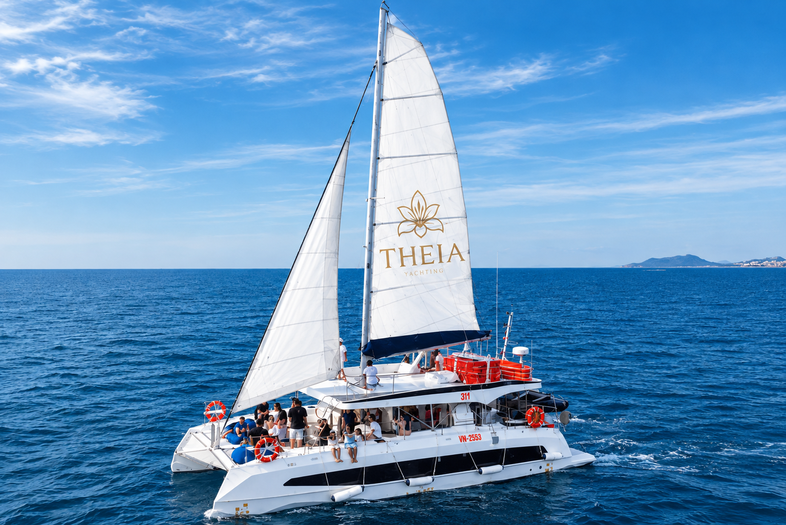
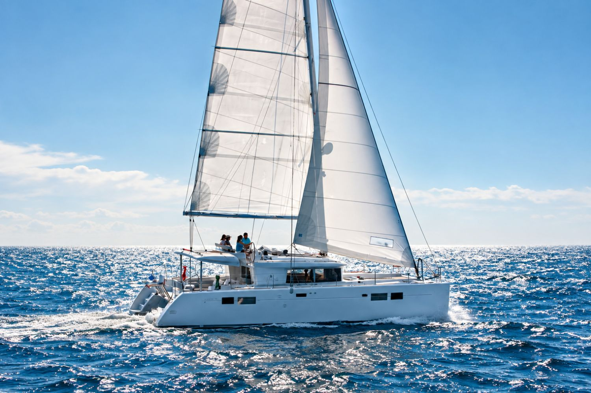

Парусный катамаран 1360 – Coral II — просторный катамаран для частной аренды у Фукуока. Устойчивые два корпуса, широкая открытая палуба и продуманная планировка — комфорт для поездок с семьёй и друзьями, праздников и особых случаев.
Построенный в 2021 году 13,6-метровый катамаран сочетает устойчивость на воде с большим открытым пространством для отдыха. Отдыхайте на палубе, ловите морской бриз, любуйтесь побережьем или собирайтесь за большим обеденным столом.
Coral II вмещает до 28 гостей — подходит для больших компаний и при этом остаётся комфортным благодаря открытой планировке. Легко перемещайтесь по яхте: загорайте, отдыхайте в тени или обедайте всей компанией.
Во время частной аренды можно купаться в тропических водах Фукуока, нырять с маской, рыбачить, кататься на SUP или веселиться на водной горке прямо с борта. Еда, напитки и снаряжение для водных развлечений уже подготовлены — просто наслаждайтесь временем на воде.
Coral II идеально подходит, если вы ищете частную яхту на Фукуоке для большой компании и спокойный день в море — семейные поездки, дни рождения, групповые мероприятия или закатные прогулки.
Программа
ПРОГУЛКА НА ПОЛДНЯ | 5 ЧАСОВ
Выберите частную утреннюю или вечернюю прогулку вдоль побережья Фукуока. Купание и снорклинг, отдых на просторной палубе, водные активности и обед с семьёй и друзьями. На вечерней прогулке вы ещё и встретите закат над морем и островом.
ПРОГУЛКА НА ЦЕЛЫЙ ДЕНЬ | 10 ЧАСОВ
Целый день в море по программе, составленной под вашу компанию и погоду. Купание, снорклинг, рыбалка, SUP и отдых на борту, а также южные воды Фукуока и соседние островки.
Индивидуальный морской маршрут
Хотите другой маршрут или планируете особый повод? Команда Theia Yachting составит частную прогулку у Фукуока с учётом даты, числа гостей и пожеланий. Свяжитесь с нами, чтобы выбрать маршрут и забронировать яхту.
Характеристики
- Год постройки
- 2021
- Верфь
- TVD
- Длина
- 13,6 m
- Ширина
- 6,9 m
- Осадка
- 1,4 m
- Вместимость
- До 28 гостей
- Формат
- Дневная аренда
Особенности
- Просторная открытая палуба
- Удобная обеденная зона на открытом воздухе
- Устойчивая двухкорпусная конструкция
- Открытый вид на море
- Зона в тени на открытом воздухе
- Удобный спуск к воде
- Отлично для купания и снорклинга
- SUP-борд
- Снасти для рыбалки
- Водная горка на борту
- Комфортно для компании до 28 гостей
- Идеально для частных прогулок у Фукуока
Включено
- Трансфер из отеля и обратно
- Приветственные напитки
- Еда и напитки на борту
- Свежие сезонные фрукты
- Полотенца
- Снаряжение для снорклинга
- SUP-борд
- Снасти для рыбалки
- Надувная водная горка
- Фейерверк (вечерний тур)
Расположение · Фукуок, Вьетнам
Посмотрите на Фукуок с другого ракурса с борта парусного катамарана 1360 – Coral II.
Прогулка по южным водам острова, остановки у соседних островков или просто день в море с купанием, снорклингом, рыбалкой и отдыхом на просторной палубе.
Благодаря простору и большой вместимости Coral II идеальна для компаний, которые хотят арендовать целую яхту на Фукуоке: семейные поездки, юбилеи, групповые мероприятия, закаты или приватный выходной в море.


Другие яхты
 Фукуок
ФукуокПарусный катамаран 1580 – Onyx
Luxury Sailing Catamaran 1580 – Onyx — комфортная частная прогулка у берегов Фукуока: много пространства, современный дизайн и внимательный сервис для полного отдыха на море.

ФукуокКатамаран Lagoon 450F – Azure
Lagoon 450 F – Azure — просторный и элегантный парусный катамаран для частных морских прогулок у Фукуока.
 Нячанг
НячангМоторная яхта Merry Fisher 795 – Jade
Моторная яхта Merry Fisher 795 – Jade — отличный выбор для тех, кто любит камерные приватные прогулки и хочет провести день на море максимально расслабленно.